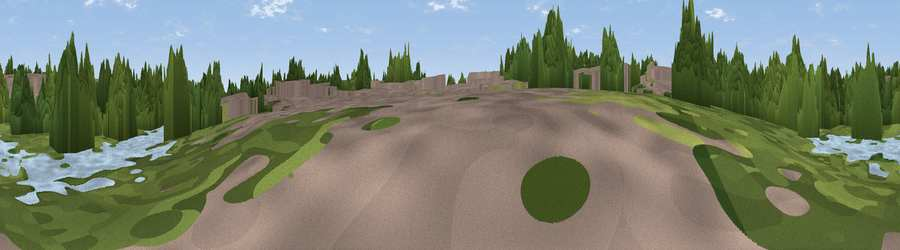

Viewpoint near Tyburn
#46260 in England · top 98% of its area beats it · near TyburnThe view, rendered

A 360° render of this exact spot computed from the terrain model, tree cover and land cover — summer colours, afternoon light, calibrated against photographs of famous viewpoints. Real trees, hedges and buildings will differ in detail.
The panorama
Grey silhouette: terrain skyline in each direction (720 bearings, Earth curvature and refraction included). Dashed green: skyline with trees (+15 m) and buildings (+8 m) as obstacles. Blue strip: how far the ground is visible on each bearing.
Where the view opens
Wedge length = distance to the farthest visible ground on that bearing (vegetation-aware). Rings at 10, 25 and 50 km.
What fills the view
49% woodland · 42% built-up · 5% water · 3% grassland
Angular shares of the visible panorama (visual magnitude), not map area. Landscape diversity 0.43 (0–1 Shannon).
Key numbers
More beautiful places nearby
The staircase of upgrades: each row has a higher view potential than everything closer. Driving times are estimates from straight-line distance, calibrated against real road routing — check an actual route before setting out.
| Place | Direction | Drive | Score |
|---|---|---|---|
| Viewpoint near Sutton Coldfield | NW · 3 km | ~8 min | 40.9 |
| Sutton Coldfield Hill | NNW · 8 km | ~17 min | 44.1 |
| Viewpoint near Great Barr | WNW · 9 km | ~18 min | 51.1 |
| Viewpoint near Great Barr | WNW · 9 km | ~18 min | 61.9 |
| Viewpoint near Streetly | NW · 10 km | ~19 min | 69.5 |
| Windmill Hill | SW · 22 km | ~37 min | 73.2 |
| Viewpoint near Clent | WSW · 23 km | ~38 min | 73.8 |
| Viewpoint near Clent | WSW · 24 km | ~39 min | 74.3 |
52.52653, -1.79381 · source: osm viewpoint · position refined by local search. Computed location — check access rights before visiting.